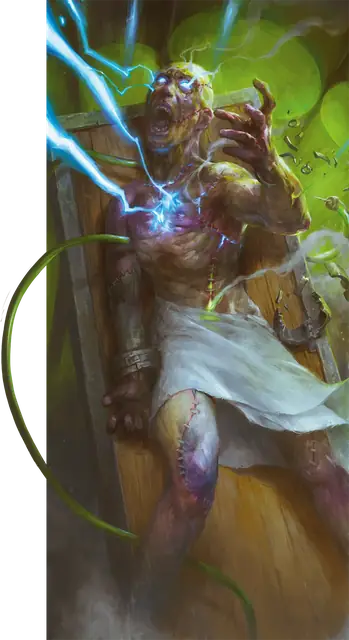

Мясной голем
Flesh Golem
Средний Конструкт, Нейтральный

Класс Защиты 9 Инициатива −1 (9)
Хиты 127 (15к8 + 60)
Скорость 30 футов
| мод | спас | ||
|---|---|---|---|
| СИЛ | 19 | +4 | +4 |
| ЛОВ | 9 | −1 | −1 |
| ТЕЛ | 18 | +4 | +4 |
| мод | спас | ||
|---|---|---|---|
| ИНТ | 6 | −2 | −2 |
| МДР | 10 | +0 | +0 |
| ХАР | 5 | −3 | −3 |
Иммунитеты Электричество, Яд; Испуганный, Истощение, Окаменевший, Отравленный, Очарованный, Парализованный
Чувства Тёмное зрение 60 футов, пассивное Восприятие 10
Языки Общий, плюс один другой язык, но не говорит
Опасность 5 (1 800 опыта; БВ +3)
Особенности
Боязнь огня. Если голем получает урон Огнём, он совершает с Помехой броски атаки и проверки характеристик до конца своего следующего хода.
Берсерк. Каждый раз, когда голем начинает свой ход Окровавленным, бросьте 1к6. При результате 6 голем впадает в состояние берсерка. В каждый свой ход, пока голем в состоянии берсерка, он атакует ближайшее существо, которое видит. Если поблизости нет существа, к которому можно переместиться и атаковать, голем атакует объект. Голем остаётся в состоянии берсерка, пока его не уничтожат либо пока он Окровавлен.
Создатель голема, находящийся в пределах 60 футов от голема в состоянии берсерка, может действием совершить проверку Харизмы (Убеждение) Сл 15, чтобы попытаться успокоить его. Голем должен слышать своего создателя. При успехе голем выходит из состояния берсерка до начала своего следующего хода, после чего он повторно бросает кость от особенности Берсерк, если всё ещё Окровавлен.
Неизменяемая форма. Голем не может перевоплощаться и быть перевоплощён.
Поглощение молнии. Каждый раз, когда голем должен получить урон Электричеством, он не получает урон и вместо этого восстанавливает Хиты в количестве, равном наносимому урону Электричеством.
Сопротивление магии. Голем совершает с Преимуществом спасброски от заклинаний и прочих магических эффектов.
Действия
Мультиатака. Голем совершает две атаки Размашистым ударом.
Размашистый удар. Бросок рукопашной атаки: +7, досягаемость 5 фт. Попадание: 13 (2к8 + 4) Дробящего урона плюс 4 (1к8) урона Электричеством.
Бонус мастерства +3
Среда обитания Любая
Сокровища Магические
Мясной голем
Вторая жизнь мёртвой плоти
Мясные големы — отдалённо похожие на человека создания, которые состоят из фрагментов тел, объединённых с помощью странной магии или загадочной науки. Они служат своим безрассудным творцам, и многие из них обладают фрагментированными воспоминаниями и склонностями личностей, из частей которых состоят. Если их ранить, эти големы могут впасть в неистовство и напасть на любого, кто попадётся им на глаза, включая своих создателей.
Мясные големы могут выглядеть по-разному. Совершите бросок по таблице «Внешность мясного голема» для вдохновения или выберите сами описание облика мясного голема.
Внешность мясного голема
| 1к6 | У мясного голема... |
| 1 | Части тел животных соседствуют с человеческими. |
| 2 | Отличная маскировка: макияж и верхняя одежда. |
| 3 | Отсутствуют части тела и видны внутренности. |
| 4 | Части тела выполняют непредназначенную для них роль (например, созданное из десятков рук туловище). |
| 5 | Идеальные черты лица, подчёркнутые красивой строчкой нитей. |
| 6 | Видны механизмы, трубки и приводы. |